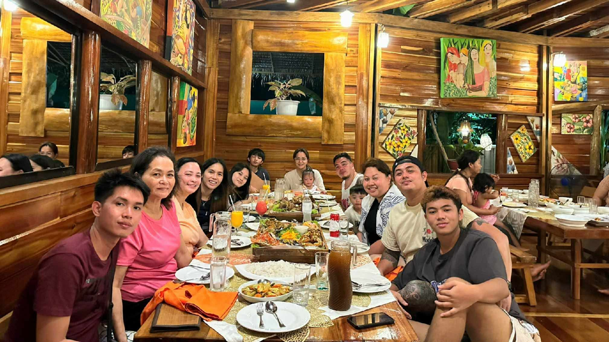

Play badminton
I smash my way through the weekends with my friends and bring that same competitive spirit to our company sportsfests. Whether it is a casual match or a tournament, I love the thrill of a good rally.

Iam a DCS student by day and a curious language learner by night. I love the challenge of building intuitive web experiences, starting with this personal profile. My goal involves combining my love for technology with my interest in global cultures.

I smash my way through the weekends with my friends and bring that same competitive spirit to our company sportsfests. Whether it is a casual match or a tournament, I love the thrill of a good rally.

My phone storage is constantly full because I cannot stop documenting every adorable and chaotic moment of my cat, Albus.

I love diving into compelling stories across different genres, which also helps me practice and pick up new phrases for my language studies.

Adventure is our family's middle name. We live for the next big trip and the next delicious meal. I cherish every moment we spend traveling the world and eating out together.
I am always open to discussing technology, linguistics, or career pivots. Drop me an email or connect with me on social media to start a conversation!